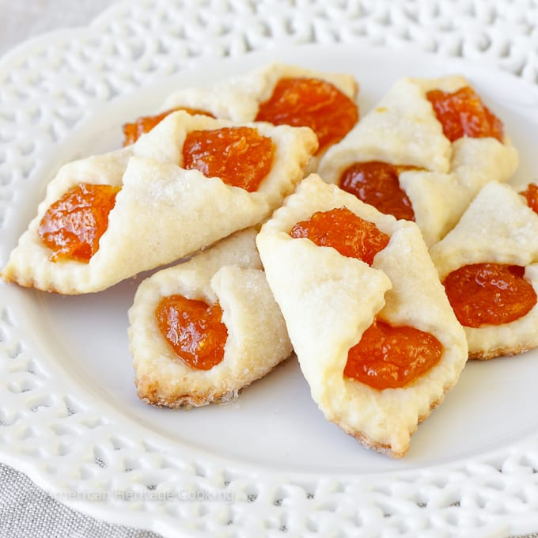

Apricot Kolache

Description
Apricot Kolaches originally hail from Eastern Europe. This style is a popular in Hungary, and has become a Christmas tradition in many regions of the United States.
Other versions of Kolaches can be traced to Chzech and Polish heritages (among others), and can take a variety of shapes and fillings.
While the Hungarian Kolache is commonly called a cookie, it is actually closer to a pastry, as are all Kolaches. This version, in particular, is famous for its cream cheese douugh, which gives it a rich, suprisingly deep flavor profile.
Ingredients
Pastry
- 2 and 1/4 cups all-purpose flour
- 1/2 teaspoon salt
- 8 ounces cream cheese
- 1 cup unsalted butter, softened
- 1/2 cup granulated sugar (for rolling)
Apricot Filling
- 1/2 pound dried apricots
- 1/2 cup sugar
Instructions
Apricot Filling
- Place dried apricots in a small saucepan and cover with just enough water to cover the apricots. Heat to a boil ad boil until the apricots soften, but do not let all the water evaporate. Add a bit of water (if necessary) to keep the apricots from burning.
- When the apricots soften, add the sugar and continue to cook until thick.
- Remove from stove, let cool for a bit, then puree filling in a food processor. If the filling is too thin, return it to the saucepan and continue to cook until thickened.
Pastry Dough
- Mix flour and salt together in a medium bowl and set aside.
- Beat softened cream cheese and butter together in a medium bowl and set aside.
- Reduce the speed of the mixer to medium-low and slowly add in the flour, pouring in 1/2 cup at a time. The dough should be soft, but not sticky.
- Remove from mixer and divide the dough into 4 equal parts. Flatten each to 3/4" thick and wrap in plastic wrap, then refrigerate until hard, at least 2 hours.
Assembling
- Pre-heat oven to 375 degrees. Move the oven rack one setting higher than the center.
- Take one of the disks of dough from the refrigerator and very lightly flour oth sides. Spead grandulated sugar on your work suuface, place the dough on top, and roll out pasry to 1/16" to 1/8" thick.
- With a pastry or pizza wheel, trim the dough into 2" or 2 and 1/2" squares.
- Place a 1/2 to 3/4 teaspoon of filling into the center o each square. Gently fold opposite corners, one over the other, and pich together.
- Move the cookies to a parchment covered baking sheet, and repeat with all remaining squares, placeing the kolaches no closer than 1" apart.
- If desired, sprinkle the middles of the kolaches with just a touch of granulatted sugar.
- Bake 12-14 minutes or until the bottom edges are golden. Remove from oven and let cool slightly on the pan, then move them to a wire rack to cool completely.
Home